Sleep
Analysis
Applied
Bayesian Statistics
Introduction
Quality of sleep
is a significant part of maintaining a healthy lifestyle. Given its importance
to our overall health, this analysis aims to explore the relationship between a
dependent variable, the duration of sleep and several independent variables. A
Bayesian approach is used to model the dependent variable, which has the
advantages of incorporating prior information if there is any and obtaining
credence intervals for the model parameters.
The Data
The data
for this analysis consists of one dependent variable and three independent
variables.
|
Name |
Status in Model |
Data Type |
Description |
|
Minutes.Asleep |
Dependent |
Continuous |
The number of minutes of sleep. |
|
Resistance.Training |
Independent |
Binary |
Was resistance training conducted on that day. (1
= yes, 0 = no) |
|
Meditation |
Independent |
Binary |
Was meditation practiced before bed that day. (1 =
yes, 0 = no) |
|
Soy.Milk |
Independent |
Binary |
Was a warm glass of soy milk consumed before bed
that day. (1 = yes, 0 = no) |
The data
for the duration of sleep, Minutes.Asleep was obtained from my personal fitbit
device. The three independent variables were recorded in my calendar. This data
is from the month of September 2018. There were two dates that the fitbit did
not record data, the 14th and the 19th. This leaves 29
data points available for analysis. Figure 1 shows the duration of
sleep for each day in September.
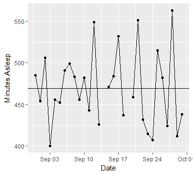
Figure 1; The horizontal line indicates the mean
One concern
with using this data was that the duration of sleep might not be independent
from previous nights sleep. Specifically, was the concern that a below average
duration of sleep would be followed by an above average duration, which would
then be followed by a below average duration, creating a negative correlation
with a lag of 1. To check this, the autocorrelation function was used. Figure 2
shows that there is not a significant correlation between duration of sleep on
a specific night and nights before it.
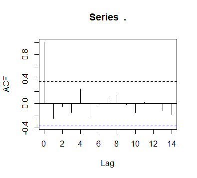
Figure 2; autocorrelation plot for minutes asleep
Figures 3,
4 and 5 show the days that resistance training occurred, meditation was
practiced, and soy milk was drunk, respectively. It looks like duration of
sleep was below average for training and soy milk days and above average for
meditation days, although these plots don't show any interaction between
variables.
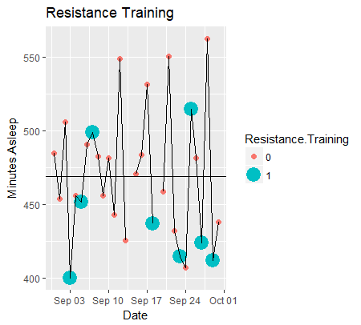
Figure 3
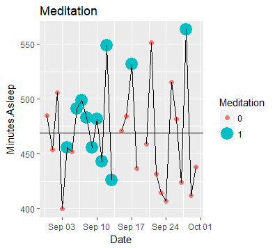
Figure 4
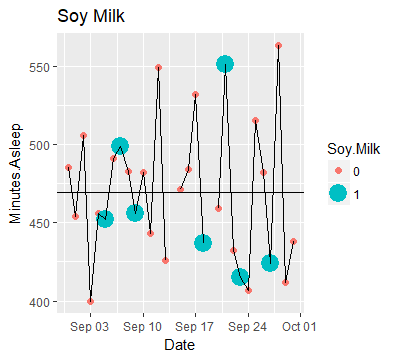
Figure 5
Bayesian Analysis
The
dependent variable is modelled by the normal distribution, where the mean of
that distribution is distributed according to a linear relationship with the
independent variables, which can be seen in the model diagram in figure 6. The
parameters of the model, β0, β1, β2 and β3 are
modelled by the normal distribution with uninformative priors. The variance of
the dependent variable, Ϗ, is modelled by the exponential distribution,
because the standard deviation can only be positive. This parameter too has an
uninformative prior.
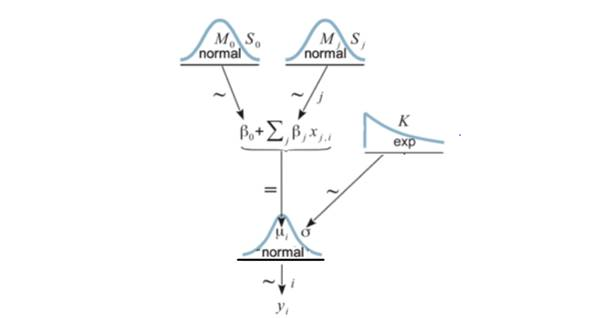
Figure 6
Create the Data List
# getting started on bayesian
methods.
dataList = list(
Ntotal = dim(df)[1],
y = df$Minutes.Asleep,
Resistance.Training = df$Resistance.Training,
Meditation = df$Meditation,
Soy.Milk = df$Soy.Milk
)
Specify the Model
modelString = "
# open quote for modelString
model {
for ( i in
1:Ntotal ) {
y[i] ~ dnorm(
mu[i] , pow(sigma, -2) )
mu[i] <- b0 +
b1*Resistance.Training[i] + b2*Meditation[i] + b3*Soy.Milk[i]
}
sigma ~ dexp(0.01)
b0 ~ dnorm(0,
pow(1000000, -2))
b1 ~ dnorm(0,
pow(1000000, -2))
b2 ~ dnorm(0,
pow(1000000, -2))
b3 ~ dnorm(0,
pow(1000000, -2))
}
"
writeLines(
modelString , con="TEMPmodel.txt" ) # write to file
Details for
the markov chain monte carlo process. The thin step is set to 100 after
discovering that a lower thin step resulted in highly correlated values with previous
steps in the parameter estimates.
library(rjags)
adaptSteps = 1000
# Number of steps to "tune" the
samplers.
burnInSteps = 1000 # Number of steps to "burn-in" the samplers.
nChains = 4 #
Number of chains to run.
numSavedSteps=10000 # Total number of steps in
chains to save.
thinSteps=100 # Number of steps to
"thin" (1=keep every step).
nPerChain = ceiling( ( numSavedSteps * thinSteps
) / nChains ) # Steps per chain.
# Compile the model
jagsModel = jags.model(file="TEMPmodel.txt",
data=dataList,
n.chains=nChains,
n.adapt=adaptSteps
)
update( jagsModel , n.iter=burnInSteps)
codaSamples = coda.samples( model = jagsModel,
variable.names=c("sigma", "b0", "b1", "b2", "b3"),
n.iter=nPerChain, thin = thinSteps)
Figures 7
through 11 show the diagnostic plots for the model parameter variables. Each shows
good mixing between the four chains as well as no autocorrelation with lag
values. The density curves for all the chains have converged to a similar
shape. This indicates that markov chain monte carlo process has been
implemented in an appropriate way.
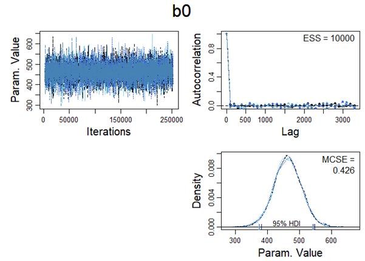
Figure 7
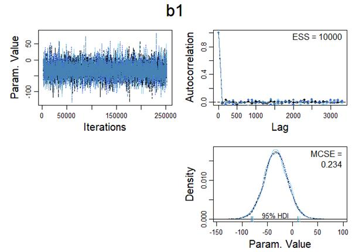
Figure 8
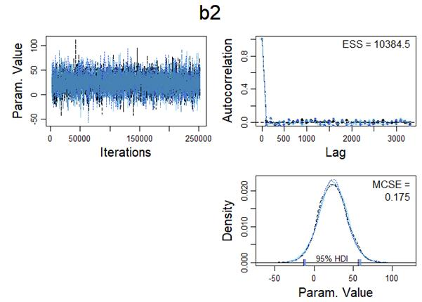
Figure 9
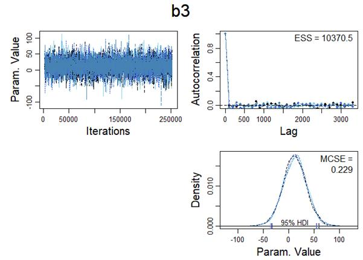
Figure 10
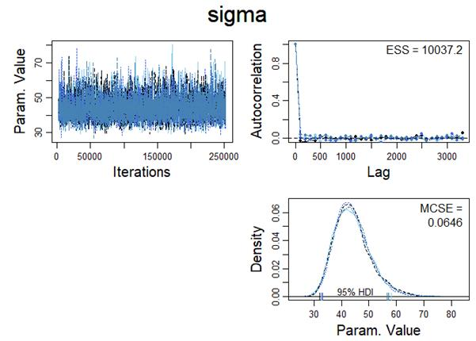
Figure 11
Results
The
high-intensity credence intervals for the model parameters are shown in figures
12 and 13.
These
results can be expressed as the linear approximation;
Minutes.Asleep ~ 462 30.2*Resistance.Training + 21.9*Meditation + 12.9*Soy.Milk.
The 95% confidence interval for β1 contains 0, so there isnt
strong evidence that resistance training is associated with less sleep, but
there is slight evidence, as most of the credence values are for negative
values. Similarly,
the 95% confidence interval for β2 also
contains 0, but most of the credence is placed on positive values, indicating slight
evidence that mediation is associated with more sleep.
The
variance of the dependent variable has a mode of 42.6 which is larger than any
of the β
coefficients. This indicates that there is still a large amount of uncertainty
around the duration of sleep, even given information about activities from that
day.
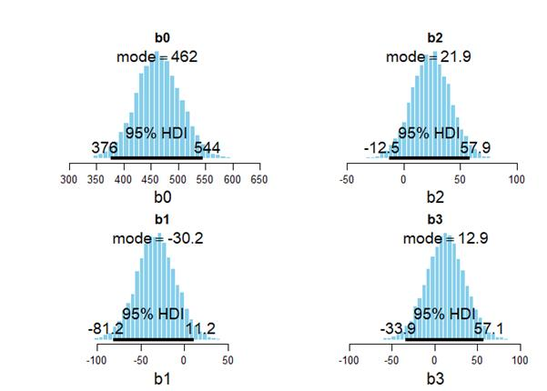
Figure 12

Figure 13
Figure 14 shows
the sleep durations predicated by the linear model. The shaded region is the
95% confidence interval which is obtained using the mode of the parameter
estimate sigma. All the actual data points fall within this interval, as
expected.
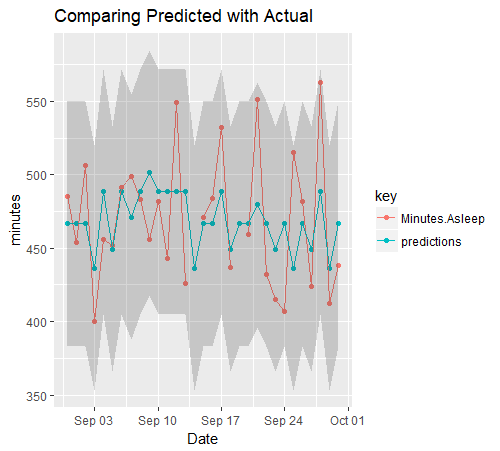
Figure 14
Discussion
There doesnt
appear to be sufficient evidence to make any strong conclusions. In cases like
this, where there is slight evidence, it can be useful to continue to collect
data.
It seems
that meditation may increase sleep duration. I will continue to meditate before
bed occasionally, as I have been. While Resistance Training may result in
reduced sleep duration, it is not something I wish to stop doing. Previously I
have conducted my work outs at what ever time of day is convenient. It might be
that the time of day of the workout influences sleep, perhaps with later work
outs impacting on sleep. A potential next step could be to only work out in the
mornings and see if the negative association continues.
There isnt
much to say about the consumption of warm soy milk before bed. Given that there
isnt much evidence either way, I will continue to drink it when I feel inclined
to do so.
Appendix
Code used for this assignment.
library(lubridate)
library(dplyr)
library(tidyr)
library(ggplot2)
sleep <- read.csv(file = 'Sleep_Stats.csv')
View(sleep)
activity <- read.csv(file = 'activity_stats.csv') %>%
mutate(Date = dmy(Date)) %>%
mutate(Resistance.Training = factor(Resistance.Training)) %>%
mutate(Sprints = factor(Sprints)) %>%
mutate(Meditation = factor(Meditation)) %>%
mutate(Soy.Milk = factor(Soy.Milk))
View(activity)
sleep_1 <- sleep %>%
group_by(Date) %>%
summarise(Minutes.Asleep = sum(Minutes.Asleep)) %>%
mutate(Date = dmy(Date))
View(sleep_1)
plot(sleep_1$Date,
sleep_1$Minutes.Asleep)
g1 <- ggplot(sleep_1, mapping
= aes(x=Date,
y=Minutes.Asleep)) +
geom_point() +
geom_line() +
geom_hline(yintercept = mean(sleep_1$Minutes.Asleep,
na.rm = TRUE))
g1
sleep_1 %>%
filter(!is.na(Minutes.Asleep)) %>%
select(Minutes.Asleep) %>%
unlist() %>%
acf()
# looks OK!
# combine the datasets
df <- merge.data.frame(sleep_1, activity, by = 'Date')
View(df)
g2 <- ggplot(df, mapping = aes(x=Date, y=Minutes.Asleep)) +
geom_point(data = df, aes(size=Resistance.Training, colour=Resistance.Training)) +
geom_line() +
geom_hline(yintercept = mean(sleep_1$Minutes.Asleep,
na.rm = TRUE)) +
labs(title = 'Resistance Training')
g2
g3 <- ggplot(df, mapping = aes(x=Date, y=Minutes.Asleep)) +
geom_point(data = df, aes(size=Meditation, colour=Meditation)) +
geom_line() +
geom_hline(yintercept = mean(sleep_1$Minutes.Asleep,
na.rm = TRUE)) +
labs(title = 'Meditation')
g3
g4 <- ggplot(df, mapping = aes(x=Date, y=Minutes.Asleep)) +
geom_point(data = df, aes(size=Soy.Milk, colour=Soy.Milk)) +
geom_line() +
geom_hline(yintercept = mean(sleep_1$Minutes.Asleep,
na.rm = TRUE)) +
labs(title = 'Soy Milk')
g4
#
# getting started on bayesian
methods.
dataList = list(
Ntotal = dim(df)[1],
y = df$Minutes.Asleep,
Resistance.Training = df$Resistance.Training,
Meditation = df$Meditation,
Soy.Milk = df$Soy.Milk
)
# Specify model
modelString = "
# open quote for modelString
model {
for ( i in
1:Ntotal ) {
y[i] ~ dnorm(
mu[i] , pow(sigma, -2) )
mu[i] <- b0 +
b1*Resistance.Training[i] + b2*Meditation[i] + b3*Soy.Milk[i]
}
sigma ~ dexp(0.01)
b0 ~ dnorm(0,
pow(1000000, -2))
b1 ~ dnorm(0,
pow(1000000, -2))
b2 ~ dnorm(0,
pow(1000000, -2))
b3 ~ dnorm(0,
pow(1000000, -2))
}
" # close quote for modelString
writeLines( modelString , con="TEMPmodel.txt" ) # write to file
library(rjags) # you need to load the package rjags into R here or at early
stages
adaptSteps = 1000 # Number of steps to "tune" the samplers.
burnInSteps = 1000 # Number of steps to "burn-in" the samplers.
nChains = 4 #
Number of chains to run.
numSavedSteps=10000 # Total number of steps in
chains to save.
thinSteps=100 # Number of steps to
"thin" (1=keep every step).
nPerChain = ceiling( ( numSavedSteps * thinSteps
) / nChains ) # Steps per chain.
# Compile the model
jagsModel = jags.model(file="TEMPmodel.txt",
data=dataList,
n.chains=nChains,
n.adapt=adaptSteps
)
update( jagsModel , # tell the name of the object that include the model to JAGS
n.iter=burnInSteps # specify the length of the burn-in period
)
codaSamples = coda.samples( model = jagsModel,
variable.names=c("sigma", "b0", "b1", "b2", "b3"),
n.iter=nPerChain, thin = thinSteps)
# Display MCMC diagnostics
source("../DBDA2Eprograms/DBDA2E-utilities.R")
diagMCMC( codaObject=codaSamples , parName="b0")
diagMCMC( codaObject=codaSamples , parName="b1")
diagMCMC( codaObject=codaSamples , parName="b2")
diagMCMC( codaObject=codaSamples , parName="b3")
diagMCMC( codaObject=codaSamples , parName="sigma" )
# Display the posterior distribution of mu
plotPost( codaSamples[,"sigma"], main="sigma", xlab=bquote(sigma))
plotPost( codaSamples[,"b0"] , main="b0" , xlab=bquote(b0) )
plotPost( codaSamples[,"b1"] , main="b1" , xlab=bquote(b1) )
plotPost( codaSamples[,"b2"] , main="b2" , xlab=bquote(b2) )
plotPost( codaSamples[,"b3"] , main="b3" , xlab=bquote(b3) )
# compare predictions to actual.
our_predictions <- 462 - 30.2*as.numeric(df$Resistance.Training) +
21.9*as.numeric(df$Meditation) + 12.9*as.numeric(df$Soy.Milk)
g6 <- df %>%
mutate(predictions = our_predictions) %>%
select(-Soy.Milk, -Resistance.Training, -Meditation, -Sprints) %>%
gather(value = minutes, key = key, -Date) %>%
ggplot(mapping = aes(x=Date, y=minutes, colour=key)) +
geom_point() +
geom_line() +
labs(title = 'Comparing Predicted with Actual')
+
geom_ribbon(data = df, aes(x=Date, ymin=our_predictions-1.96*42.6, ymax=our_predictions+1.96*42.6), alpha=0.2, inherit.aes = FALSE)
g6